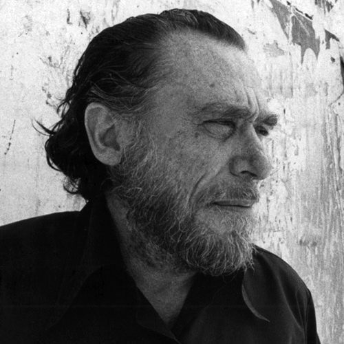
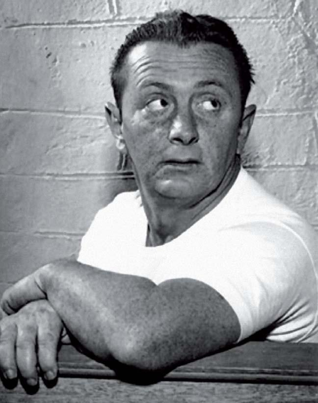

Realismo Sucio
Explorando la crudeza de la vida cotidiana a través de la pluma y la tinta.
Realismo Sucio
Explorando la crudeza de la vida cotidiana a través de la pluma y la tinta.
Caracteristicas
El realismo sucio se caracteriza por su enfoque en retratar la vida cotidiana de manera cruda y directa. Los escritores de este movimiento literario a menudo se centran en personajes y situaciones marginales, así como en aspectos de la vida que a menudo se pasan por alto o se consideran poco convencionales. Esta representación sincera y a menudo descarnada de la vida es una de las características distintivas del realismo sucio.
El realismo sucio tiende a utilizar un estilo narrativo directo y sin adornos. Los escritores del género suelen emplear un lenguaje sencillo y conciso para contar sus historias, evitando florituras literarias o excesivas descripciones. Esta simplicidad en la escritura contribuye a la sensación de autenticidad y realismo que se busca en este estilo.
Los personajes en las obras de realismo sucio a menudo son marginados sociales, alcohólicos, desempleados o personas que luchan con problemas de adicción y dificultades en la vida. Estos personajes representan la cara menos glamurosa de la sociedad y son fundamentales en las historias del realismo sucio.
El realismo sucio suele abordar temas de alienación y soledad. Los personajes a menudo se sienten aislados y desconectados de la sociedad, lo que contribuye a la atmósfera de desencanto y desilusión que caracteriza a muchas obras de este género.